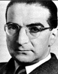
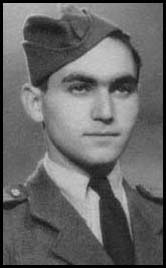

A második világháború
történelmi kulcsfiguráinak visszaemlékezései közt sehol nem szerepel egyetlen szó sem gázkamrákról
vagy haláltáborokról. Winston Churchill többkötetes, csaknem ötezer oldal terjedelmű, magyarul is
megjelent
A második világháború című művében
egyetlenegyszer sem szerepel a "gázkamra", a "zsidók kiirtása" vagy a "hatmillió" szó, pedig a "kis
mustárgáz-ördög," ahogy felesége becézte a tömegpusztító fegyverekhez való beteges vonzódása miatt,
igencsak sokat csúsztat a németek kárára. Ugyanígy nem szerepelnek ezek a szavak, vagy akár csak
utalás a holokausztra Charles De Gaulle 2054 oldalas
Mémories de
guerre című emlékirataiban, illetve Dwight D. Eisenhower
Crusade in Europe című 559 oldalas könyvében.
Az egyetlen visszaemlékezés,
amelyben szó esik haláltáborokról, vitéz nagybányai Horthy Miklós emlékiratai. Ebben Horthy Miklós
említi, hogy amikor elrabolt fiát, ifj. Horthy Miklóst viszontlátta, az arról számolt be, hogy a
buchenwaldi koncentrációs táborban egy "kínzókamra" mellett őrizték, s hallotta a megkínzott emberek
sikolyait. Horthy István kormányzóhelyettes özvegye, gróf Edelsheim-Gyulai Ilona pedig 1992-ben, a
Horthy admirális című riportfilmben arról beszélt, hogy
1944-ben egy Auschwitzból megszökött zsidó személy olyan jegyzőkönyvet adott át neki, amely
részletesen írt a gázkamrákról, a tömeges kivégzésekről. Ezt továbbította a kormányzónak, de előtte
maga is elolvasta. Horthy Miklós e jegyzőkönyv hatására állíttatta le a "munkaerőcserét", azaz a
munkaszolgálatra alkalmas zsidók külföldre szállítását. Özvegy Horthy Istvánné a riportban kifejezte
mindmáig tartó megdöbbenését az akkor olvasottak felett.
De mit tartalmazott ez az
iratköteg? Mi volt az, amit sem keleten, sem nyugaton nem hitt el senki egészen a hatvanas évekig?
Hiszen például az
Encyclopaedia Britannica - a világ
egyik legmegbízhatóbbnak tartott forrásműve - 1956-os kiadásában még semmit sem írt sem
haláltáborokról, sem mérges gázról a koncentrációs táborokról szóló szócikkében, sőt, a zsidók
"táborokba koncentrálását" mint általános háborús gyakorlatot említi, nem pedig "emberiségellenes
bűntettet", amelyet minden hadviselő fél gyakorolt a "megbízhatatlan elemek" elkülönítésére. A
"mérges gáz" szó csak 1967-ben került a szócikkbe.
A Horthy Miklósnak átadott
Auschwitzi jegyzőkönyv nem valamiféle elveszett történelmi titok.
Teljes terjedelmében
elolvasható az Interneten,
és könyv formájában is kapható. Létezéséről, történetéről a Horthy Miklósról szóló
Wikipedia-szócikk is megemlékezik. Két, a
koncentrációs táborból megszökött fogoly, Rudolf Vrba és Alfred Wetzler állították össze, és 1944
elején a szlovákiai Zsolnán adták át a helyi cionista köröknek. A pozsonyi cionista központ vezetői
április 25-én és 26-án meghallgatták őket, ahol beszámoltak két éves raboskodásuk élményeiről.
(Ezek szerint a II. világháborús Szlovákia fővárosában 1944-ben működött cionista központ. Mi
több, cionista körök is, noha az ország 15 ezres zsidó lakosságát akkor már szinte mind
koncentrációs táborokba szállították.) E beszámolókból készültek az
Auschwitzi jegyzőkönyvek, amelyeket a pozsonyi cionisták eljuttatták isztambuli,
genfi, londoni és budapesti kollégáiknak. A leírtakat később megerősítette a budapesti születésű
Ernest Stein cionista ellenálló is. A beszámolót - állítása szerint - hitelesnek fogadták el a
szövetségesek is. Ennek ellenére, mint említettem, a szövetséges vezetők egyike sem említi az
abban leírtakat, vagy akár a jelentés létezését a második világháború fontos eseményei
között.
A budapesti cionisták, közelebbről Kasztner Rudolf (Israel Kastner) cionista vezető
ezt az jelentést állítólag visszatartotta, elhallgatta. Csak a több százezer zsidó deportálása
után tárta a kormányzó és a magyar kormány elé. A vonatra szálló "hatszázezer" zsidó ezért nem is
sejthette, hogy a halálba viszik őket, pedig ha tudták volna, minden erővel ellenálltak volna.
Hihető ez? A budapesti cionisták hagyták volna elpusztítani sok százezer hitsorsosukat? Vajon
miért? Stein szerint azért, mert Kasztner egyezséget kötött Adolf Eichmann-nal, hogy az másfél
millió dollár ellenében biztosítsa 1685 gazdag zsidó Svájcba menekülését. A "Kasztner-vonat"
története közismert, a lepecsételt vagonok valóban megérkeztek Svájcba. Ha Stein állítása igaz,
akkor Kasztner Rudolf feláldozott 600 ezer szegény zsidót 1600 gazdag zsidó megmeneküléséért. Ez
olyan árulás lett volna saját népe ellen, amiért mindmáig a holokauszt fő felelősei közt
emlegetnék.
Azonban Kasztnert soha nem vonták felelősségre a jegyzőkönyvek állítólagos elhallgatása
miatt. Sőt! Yetzhiam Weitz izraeli történész például úgy emlegeti őt, mint aki
"a két kezével több zsidót mentett meg, mint bárki más előtte vagy
utána". A háború után Izraelbe költözött, ahol magas állami pozíciót kapott, a Kereskedelmi
és Iparügyi Minisztérium szóvivője lett 1952-ben. Csak egyetlen ember vádolta meg a nácikkal való
kollaborálással, Malchiel Gruenwald, egy amatőr író és bélyeggyűjtő 1953-ban. Kasztner azonban oly
fontos volt az izraeli kormánynak, hogy az állam maga indított eljárást Gruenwald ellen
rágalmazásért, hogy Kasztnernek ne kelljen ezzel fáradnia! Kellemetlen fordulatot vett az ügy,
amikor a bíróság kimondta, hogy Kasztner valóban árulást követett el, amikor a gazdag zsidók
megmentését megszervezte. Az ítélet szerint a nácik által a gazdag zsidóknak felajánlott
menekülési lehetőség olyan ajándék volt, amelynek elfogadása "kollaboráció volt, annak
legteljesebb értelmében".
De ez nem jelenti, hogy Kasztner ellen bármilyen büntetőeljárás
indult volna. Sőt, az izraeli legfelsőbb bíróság 1958 januárjában megsemmisítette még ezt az
ítéletet is, az indoklás szerint azért, mert az elsőfokú bíróság "súlyos hibát követett el". Ezt
azonban Kasztner már nem érhette meg. Az Eichmann-nal való barátkozással hírbe hozott,
Izrael-szerte közutálatnak örvendő politikust 1957 március 3-án a 24 éves Zeev Eckstein és két
társa agyonlőtte Tel-Avivban. Perük során kiderült, hogy Eckstein a Moszad fizetett informátora
volt. A bíróság azonban elutasította azt a feltételezést, hogy a gyilkosságot a titkosszolgálat
szervezte volna, mivel a Moszad igazgatója jó barátságot ápolt Kasztnerrel. Kasztner esete
mindmáig fenntartja azokat a spekulációkat, miszerint a magasabb cionista körök szándékosan nem
akadályozták a zsidók deportálását a második világháború alatt.
Mi történt a két auschwitzi
szökevénnyel, Rudolf Vrba-val és Alfred Wetzlerrel?
A felvidéki zsidó Vrba, eredeti nevén
Walter Rosenberg 1942-ben, 18 éves korában Angliába akart szökni, hogy az "antiszemitizmus" ellen
harcolhasson. Át is jutott a magyar határon, ám Magyarországot szlovákiai zsidóként saját leírása
szerint "nagyon ellenségesnek" találta, és visszafordult. (Azt a Magyarországot, ahová akkoriban
ezerszám menekültek a szlovákiai zsidók!) A magyar határőrök azonban a határátlépési kísérlet
közben elfogták, és átadták a szlovák hatóságoknak. Megszökött a Nováky-i gyűjtőtáborból, ám egy
rendőrjárőr ismét elfogta. Júniusban a majdaneki, majd az auschwitzi koncentrációs táborba
küldték.
Visszaemlékezéseiből kitűnik, hogy valóban járt Auschwitzban. Szemléletesen írja
le a kemény munka és a kápók kegyetlenkedéseinek következményeit, az éhező orosz hadifoglyokat,
akik a tábort építették. Pontos számokat ír, amikor csoportokról beszél. Ám mindjárt a második
részben kiderül, hogy mennyire következetesek a megfigyelései.
"Az első és második
szállítmányból 120 embert - köztük engem - kiválasztottak, és az auschwitzi lágerparancsnokság
parancsára, amely orvosokat, fogtechnikusokat, főiskolásokat és tisztviselőket igényelt,
Auschwitzba küldtek. A csoport 90 szlovák és 30 francia zsidóból állt. Egyhetes auschwitzi
tartózkodás után ebből a 120 értelmiségiből 18 orvost és ápolót, valamint 3 tisztviselőt
választottak ki. Az orvosokat az auschwitzi kórházban foglalkoztatták, míg a 3 tisztviselőt,
köztük voltam én is, visszaküldtek Birkenauba. Két társam, Ladislaus Braun Nagyszombatból és
Gross Verbóból, ők időközben már meghaltak, a szlovák blokkhoz került, én a franciához, ahol
is a foglyok nyilvántartásával bíztak meg bennünket. A maradék
99 személyt az auschwitzi kőfejtőbe küldték, ahol rövid időn belül
elpusztultak."
Auschwitzban sosem volt kőfejtő. Nem is lehetett, hiszen síkságon
fekszik. Kőfejtő Mauthausenben volt, de az Ausztriában működött, jó ötszáz kilométerre onnan.
Ebből az idézetből kitűnik, hogy a valóságban Vrba korántsem ismerte a tábor környékét
pontosan.
Nézzünk most egy idézetet a második részből.
"Amikor a második
szállítmány kb. 14 nap múlva megérkezett, a mi transzportunkból már csak 150-en voltak életben.
Minden este megszámoltak bennünket, a hullákat kézikocsira tették, és a közeli nyírfaligetbe
vitték, ahol azokat nehány méter mély és 15 m hosszú gödörben elégették."
Egy szót sem
veszteget arra, hogy hogyan égették el a halottakat, pedig nagyon pontosan igyekszik beszámolni
mindenről. Benzinnel? Tűzifával? Oltott mésszel? Miért nem temették el egyszerűen őket, hiszen egy
"néhány méter mély és 15 méter hosszú" gödör bőven elegendő lenne ehhez? És miért nem a
krematóriumban égették el a holttesteket? Hiszen pár sorral lejjebb említi, hogy volt krematórium,
mégpedig elég nagy teljesítményű, és használták is az elhunyt foglyok elégetésére.
"Röviddel ezután az egyik épületben berendeztek egy ún. kórházbarakkot.
Ez volt a hírhedt "7-es számú blokk". Kezdetben főápolóként alkalmaztak itt, később én lettem
a gondnok. A kórház főnöke, a 3350-es számú lengyel politikai fogyoly, Viktor Mordarki volt. A
kórház nem volt más, mint a halálra várók gyűjtőhelye. Minden munkaképtelen foglyot a kórházba
küldtek. Orvosi kezelésről és ápolásról szó sem volt. Naponta kb.
150-en haltak meg. A hullákat naponta átszállították az auschwitzi
krematóriumba."
Vrba beszámolója itt bukik el, a számokon. Hiszen ezek szerint a
krematórium - 1942-ben még csak egy működött, és az sem tömeges égetésre volt tervezve! - alig tíz
perc alatt képes volt elhamvasztani egy halottat, beleértve a hamvak kitakarítását is. (Könnyű
kiszámolni, hogy ha 24 órában működik, és naponta 150 halottat kell elégetni, akkor 9,6 perc jut
egyre.) Ezzel szemben nézzük csak, mit ír egy
modern temetkezési cég
FAQ-ja arról, mennyi időbe telik egy kremálás!
K: Hogy működik a
halottégetés, mennyi ideig tart? Valóban hamuvá válik az egész test?
V: A testet két és fél órára helyezzük a kamrába, 1600 és 2000 fok közötti
hőmérsékleten. Csak csontszilánkok és hamu marad utána, mondta Kevin Waterston, a Minnesotai
Halottégető Egyesülettől.
Ezek után nyilvánvaló, hogy nemhogy a tíz perc alatt
befejeződő kremálás nem lehet igaz, de a szabadtéri hullaégetés sem túl hihető. Ilyen hőmérsékletet
nagyon nehéz lenne egy közönséges gödörben elérni. Természetesen el lehet égetni halottakat szabad
ég alatt, ám teljesen megsemmisíteni nem.
Érdekes, amit Vrba a zsidó kápók
kegyetlenkedéseiről ír. Sokkal gyakrabban fordul ez elő, mint ahányszor az SS-ekről írt
hasonlókat.
"Sokakat a felügyelők, az ún. kápók munka közben minden ok nélkül
egyszerűen agyonütöttek. Csapatunk hiányzó tagjait naponta a Birkenauban maradt nagyobbik csoportból
pótolták. A munkából való esti hazatérés nehéz és veszélyes volt. A hosszú, 5 km-es úton magunkkal
kellett cipelni a szerszámainkat, tüzifát, nehéz főzőüstöket, és napközben meghalt vagy agyonütött
társaink holttestét. Felpakolva kellett katonai rendben vonulnunk. A kápó a neki nem megfelelő
menetelést kegyetlen ütlegeléssel vagy agyonütéssel büntette. Amikor a második szállítmány kb. 14
nap múlva megérkezett, a mi transzportunkból már csak 150-en voltak életben."
"Egy fogoly megölése nem számít bűncselekménynek. Egyszerűen csak
nyilvántartásba veszik, hogy az ilyen és ilyen számú fogoly meghalt. Az, hogy milyen módon
következett be a halál, teljesen mellékes. Egyszer magam is jelen voltam egy esetnél, amikor egy Jossel nevű fiatal lengyel zsidó elmagyarázta egy SS-katonának "a
gyilkolás helyes módját", s szemléltetés végett puszta kézzel, fegyver nélkül megölt egy
zsidót."
"A "kápók" birodalmi németek és csehek voltak. Az előbbiek
általában brutálisak voltak, a csehek segítettek, ahol csak tudtak. A láger felügyelője egy holicsi
cigány volt, akit Galbavynak hívtak, helyettese, egy Mittler nevű szeredi zsidó, aki ezt a
tisztséget brutalitásának és beteges kínzási hajlamának köszönhette. Hatalmi pozícióját arra
használta fel, hogy a már amúgy is súlyosan sújtott zsidókat még jobban kínozza. Hacsak gonoszat
tehetett, nem mulasztotta el. "
De nézzük tovább a beszámolót. A negyedik részben Vrba
leírja, milyenek voltak az 1943-ban megépült megsemmisítő komplexumok.
"A hamvasztóhelyiség közepéből egy magas kémény emelkedik ki. Körülötte 9
kemence épült, mindegyik 4 nyílással. Minden nyílásba 3 átlagos méretű holttestet lehet
elhelyezni, amelyek másfél órán belül teljesen elégnek. A kemencék kapacitása eléri a napi 2000
holttestet."
9 kemence, 4 nyílással, egyenként 3 holttestel - azaz 108 halottat égethetnek
egyszerre. Ez másfél órás eljárás. (Egy kicsit romlott a hatékonyság a régiekhez képest, no de
kicsire nem adunk...) Átlagolva: egy óra alatt 81 halott égethető el. 81 x 24 = 1944. Valóban, ez
csaknem 2000 holttest. A gázkamrák működésének szemléletes leírása után a következő
olvasható:
"A négy krematórium összteljesítő képessége tehát naponta 6000
elgázosítás és elégetés."
Jó, hát tévedett. Később szerepel a helyes nyolcezres
számérték is. Csakhogy egyetlen szót sem ír arról, milyen üzemanyaggal működtek a krematóriumok.
Leírást kapunk arról, hogyan mentek be az áldozatok, kétezer ember egyszerre, hogyan szorították be
őket a gázkamrába, de arról egy szó sincs, hol tárolták az üzemanyagot (szén? fa?), kik hordták
azt, és kik rakták a kemencékbe. Számoljunk csak, mennyi energia kell egy halott
elégetéséhez!
Krematóriumokat a mai napig építenek, így lehet találni forrásokat arra nézve,
mennyi energiát igényel egy ilyen szerkezet.
Itt van például egy állati tetemek elégetésére
szolgáló krematórium adatlapja. Az elején látható egy táblázat, amely a különféle modellek adatait
tartalmazza. Tételezzük fel, hogy egy-egy auschwitzi halott átlagos súlya 50 kg körül volt. Ez
esetben az AP50 típusra lenne szükségünk a Techtrol cég termékeiből. Ez a készülék egy óra alat 111
250 kcal energiát használ fel. Másfél óra alatt tehát 166 875 kcal-t.
Tegyük fel, hogy
Auschwitzban a legkiválóbb minőségű antracitot pazarolták a krematóriumokban, amelynek kb. 35000
KJ/kg, azaz 8365 kcal/kg az energiatartalma. Egy halott elégetéséhez 19,9 kg lenne szükséges. 6000
halotthoz mintegy 120 tonna, azaz hat vagon. Naponta! Azonban soha egyetlen visszaemlékezés sem
említette, hogy valaha is szenet szállítottak volna Auschwitzba, szenet tároltak vagy lapátoltak
volna a foglyok. Vrba igen jól értesültnek tűnik mindenről, ami a táborban zajlott (a kőfejtőt
leszámítva), de ő sem ír széntárolóról, sem pedig óriási olajtartályokról. Más energiaforrást
akkoriban nemigen használtak.
Mindezek persze nyilvánvalóak számunkra ma, 2009-ben, amikor a
holokauszt hazugságai sorra megdőlnek. 1944-ben azonban Horthy Miklósnak nem volt oka kételkedni a
hozzá hivatalos csatornán eljuttatott irat valódiságában, és nem is tudta ellenőrizni, mi folyik a
Krakkó melletti táborban. A jól felépített propagandairat nem tartalmaz olyan ellentmondásokat,
amelyek akkor még szemet szúrtak volna.
Végül pedig Vrba nem pazarol sok szót arra, hogyan
sikerült kijutnia a dupla elektromos szögesdróttal, őrtornyokkal, vizesárkokkal körülvett
táborból.
"1944. április 7-én társammal együtt sikerült megszöknöm."
Ez
minden. Szerencsére más források többet elmondanak. Vrba-ról külön szócikk található az angol
Wikipedián, amelyben szerepel szökésének
története.
"Amikor Birkenauba érkezett, találkozott Alfred Wetzlerrel, a 29162-es
számú fogollyal, akit szülővárosából ismert. Wetzler a birkenaui hullaházban dolgozott, azon foglyok
azonosítószámát jegyezte fel, akik nem gázosítás következtében haltak meg, és hogy mennyi aranyat
nyertek ki a fogukból.
A két férfi úgy döntött, megszöknek. A tábor földalatti mozgalma
segítségével 1944 április 7-én, délután 2 órakor - Pészach napján - elbújtak egy mélyedésben,
amelyet az épülő "Mexikó" táborrész építőanyagául szolgáló faanyag közt alakítottak ki. Ez Birkenau
belső peremvonalán kívül volt, de még a legkülső vonalon belül, amelyet napközben őrök vigyáztak. A
többi fogoly deszkákkal takarta el búvóhelyüket, majd erős orosz dohánnyal kevert gázolajjal
locsolták körbe a területet, hogy megzavarják az őrkutyákat. Ezt a trükköt orosz foglyoktól, egészen
pontosan Dimitrij Volkovtól tanulták, aki megszökött Auschwitzból, de ismét
elfogták..."
Álljunk meg egy szóra. Megszökött, de újra elfogták? Hiszen Vrba maga írta
meg, mi történt az ilyen foglyokkal.
"Ha élve fogják el a foglyot,
akkor az egész láger szeme láttára felakasztják. Ha megtalálják a holttestét, akkor azt visszahozzák
a lágerbe - akárhol akadnak is rá -, és a bejáratnál közszemlére teszik ki. A kezei közé tesznek
egy táblát a következő felirattal: »Íme itt vagyok.«"
Feltételezhetjük, hogy
Volkov nem maga mondta el nekik, hanem a többi fogoly megfigyelte a trükköt, mielőtt megszökött,
és mások mondták el Vrbáéknak. Ám a következő mondat nem hagy kétséget:
"Volkov azt is tanácsolta nekik, hogy óvatosan utazzanak, pénz nélkül,
és senkivel se osszák meg terveiket."
A szökés története tovább folytatódik.
"Aznap este 20:33-kor Auschwitz-II parancsnoka, Fritz Hartjenstein
SS-ezredest telexen értesítették, hogy két zsidó megszökött. A két férfi korábbi szökési
kísérletei nyomán tudta, hogy amikor az esti Appel-nél, azaz sorakozónál felfedezik, hogy
hiányoznak, három napig keresni fogják őket."
Ezek szerint már többször próbáltak
megszökni ők maguk is? Mégsem akasztották fel őket? Érdekes.
"Ezért elbújva
maradtak a negyedik éjszakáig, bár egyszer majdnem lebuktak, amikor az egyik őket kereső őr éppen
fölöttük állt meg a farakáson. Április 10-én holland ruhában, kabátban és csizmákban, amelyeket az
egyik »Kanada«-raktárból szereztek, dél felé menekültek, a Sola folyóval párhuzamosan,
a 133 km-re levő szlovák határ felé tartva, egy iskolai atlasz segítségével, amit Vrba a raktárban
talált.
»A szökés pillanatától megszakadt minden kapcsolatunk Auschwitzban maradt
barátainkkal, kint pedig senki sem várt ránk. A világ számára de facto megszűntünk létezni, amikor
1942 tavaszán felraktak bennünket a deportáló vonatra. Létezésünk egyetlen bizonyítéka az a
nemzetközi körözés volt, amelyet távirati úton megkapott a Gestapo minden egysége. Ezt a körözést
a Kripo (bűnügyi rendőrség), a Sicherheitsdienst (biztonsági szolgálat) és a Grenzpolizei
(határőrség) is megkapta.«
Így jutottak el a szlovák határig. Wetzler eddig is
másodhegedűs volt a történetben, s ezután is az maradt. Neki sikerült egy Zyklon-B doboz címkéjét
elhoznia bizonyítékként. A háború után ő írta meg az
Auschwitz,
négymillió ember sírja című könyvet. De ezután kilépett a történelemből. 1988-ban
Csehszlovákiában halt meg. Auschwitzban az ő visszaemlékezései alapján állították fel a négymillió
áldozatnak szóló emléktáblát, amelyet aztán a kilencvenes évek elején csendben levettek, és 1,1
millióra cseréltek. Wetzler állítása szerint egyébként a magyarországi zsidódeportálások azért
álltak le, mert a nyugati szövetségeseket meggyőzték állításai, és ennek nyomán olyan
kormányépületeket bombáztak le Magyarországon, amelyekből a deportálásokat irányították. Ez a
marhaság olvasható a Wetzlerről szóló
Wikipedia-szócikkben is.
Amikor a
jelentés eljutott Horthy Miklóshoz, ő először kitalációnak, "zsidó mesének" minősítette.
Emlékirataiban nem is említi. Azonban Veesenmayer a vele történt beszélgetésről tett jelentésében
említi, hogy a jegyzőkönyv miatt a szövetségesektől és semleges országok vezetőitől áradni kezdtek a
tiltakozások Horthy Miklóshoz. 1944 július 7-én a magyar hírszerzés elfogott egy táviratot,
amelyet Richard Litzheim, a genfi Zsidó Ügynökség elnöke küldött Angliába, s amelyben a magyar
kormány tagjait nevezte meg az auschwitzi tömeggyilkosság felelőseiként, javasolva a háborús
bűnösökként való felelősségre vonásukat. Ezért végül 1944 július 9-én Horthy Miklós további
kivizsgálásig leállította a deportálásokat. Kérdésére Adolf Eichmann és Edmund Veesenmayer
egyaránt tagadták a Vrba-Wetzler jelentés valóságtartalmát. A hivatalos kivizsgálásra végül is nem
került sor, a háború eseményei más fordulatot vettek.
Különös, de sem Vrba, sem Wetzler nem
jelent meg sem a nürnbergi perben, sem az Eichmann-perben tanúként. Pedig ők voltak az egyetlenek,
akik személyesen beszámolhattak volna a tábor 1942-43 körüli állapotáról. Vrba csak az 1963-65-ös
frankfurti Auschwitz-perben jelent meg, majd 1995-ben Ernst Zündel ellen, akit
holokauszt-tagadásért fogtak perbe.
1944-ben Rudolf Vrba számára a Szlovák Zsidótanács új igazolványt
állított ki, amelyben "tisztavérű árja" bejegyzés került. (Hogy hogyan bocsáthatott ki ilyen
igazolványt egy zsidótanács egy állítólag náci országban, azt nem tudjuk.) 1944 szeptemberében
csatlakozott egy szlovák partizáncsapathoz, és a háború végéig a németek ellen harcolt. A háború
után a kommunista párt támogatója volt, ám a sztálini antiszemitizmust felismerve inkább elhagyta az
országot, amikor 1958-ban Izraelbe hívták egy holokauszt-konferenciára. Végül Kanadában telepedett
le, és 2006-ban halt meg.
Visszaemlékezéseit mindmáig komoly ellentmondások övezik. Még a
holokauszt-történészek is megbízhatatlannak nevezik jelentését, noha az abban foglaltakat, a
gázkamrák létezését ők nem tagadják. Az elfogadott álláspont szerint a jelentés alapvetően hiteles,
noha igen pontatlan, de ezek a pontatlanságok "csak fokozzák hitelességét" (sic!)
A
Vrba-Wetzler jelentést már a maga idejében sem vették igazán komolyan. Bár a szövetségesek
felhasználták propagandacélokra, végül nem ez, hanem a háborús bűnökért való felelősségre vonás
fenyegetése győzte meg Horthy Miklóst a deportálások leállításának szükségességéről. Politikusként
pontosan átlátta, hogy Németország el fogja veszíteni a háborút, és az igazságnak vajmi kevés köze
lesz ahhoz, hogy kit ítélnek el háborús bűncselekményekért és kit nem. Ha a magyar kormány részéről
sor kerülhetett volna a jelentés vizsgálatára, az egészen más fénybe helyezte volna a holokauszt
kérdéskörét a háború után. Erre azonban a hadiesemények és a nyilas hatalomátvétel miatt sajnos már
nem került sor. A háború után a jelentés tartalma tényként került a köztudatba Magyarországon, majd
világszerte. Ez szolgált a holokauszt-világvallás egyik fő dogmájának alapjául, s erre építették
rá a későbbi elemeket - hol sikeresen, hol kevésbé. Érdekes módon a nagy hősök, akik éveken,
évtizedeken át terjesztették történeteiket a haláltáborokról, mind-mind meggyőződéses cionisták
voltak, népük lelkes védelmezői, akiknek érdekükben állt minél nagyobbat lódítani a németekről. Vrba
és Wetzler sem volt más. Már csak ezért is el kell gondolkodni, mennyire hitelesek az ilyen
"szemtanúk".